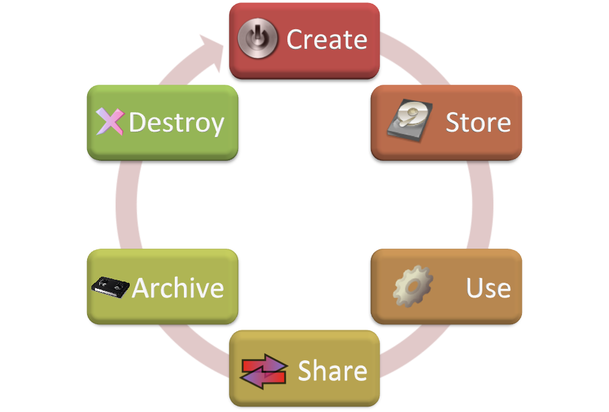

Introduction to Python and ArcPy

Who am I?

Jerry Yuan
Ph.D in Geography (2008)
Master in GIS(2001)
Bachelor in Environmental Geography (1998)
17+ years' experience in GIS
Questions
- I heard programming is difficult and I am just a Geographer.
- Why should I spend several weeks on learning Python and ArcPy for my GIS work?
- Can I just use ArcGIS Desktop to do everything I want to do?

Answer IS
We are all lazy!!!We want to spend more time on the creative GIS work rather than the boring, repetitive GIS work.
We want to spend more time with our family and friends!!!
We want to sleep more!!!
.jpg)
Attention!!!
If you are a lazy person like me, keep your attention focused for two hours today.You will save hundreds of hours or even thousands of hours in your future career.

You don't believe me?
Here is my story......
Outline
Introduction to Python - 45 minutes
- An Overview of Python
- Data types
- Control Structures
- Function
Introduction to ArcPy - 45 minutes
- An Overview of ArcPy
- Modelbuilder vs. ArcPy
- Control Structures
- Function
An Overview of Python
- "Python is an easy to learn, powerful programming language."
- "It has efficient high-level data structures and a simple but effective approach to object-oriented programming."
- "Python’s elegant syntax and dynamic typing, together with its interpreted nature, make it an ideal language for scripting and rapid application development in many areas on most platforms."
Python Interpreter
python or C:\Python27\ArcGIS10.1\python
Python 2.7.2 (default, Jun 12 2011, 15:08:59)
Type "help", "copyright", "credits" or "license" for more information.
>>> 2 + 2
4
>>> 50 - 5*6
20
>>> (50 - 5.0*6) / 4
5.0
>>> 8 / 5.0
1.6
Why don't we share GIS Data?
Sharing GIS data is always good
Sharing GIS data is always good
Sharing GIS data can help you make money
Sharing GIS data within an organization or among organizations
Sharing GIS data with the public
GIS data sharing organizations in Ontario
- In Ontario, we have OGDE (Ontario Geospatial Data Exchange). York University is a member of OGDE.
- OGDE is a community of organizations that voluntarily share and use digital geographic data about Ontario at no cost.
- OGDE contains the standard licence agreements, a metadata directory and data warehouse.
GIS data sharing organizations in Canada
- GeoGratis created by Natural Resources Canada http://www.geogratis.gc.ca
- Geobase: A federal, provincial and territorial government initiative created by the Canadian Council on Geomatics http://www.geobase.ca
- GeoConnections: http://geodiscover.cgdi.ca
- Atlas of Canada: http://atlas.nrcan.gc.ca
Standards for GIS Data Sharing
- The Open Geospatial Consortium, Inc. (OGC) (http://www.opengeospatial.org)
- International Organization for Standardization (ISO) – (http://www.iso.org)
- Federal Geographic Data Committee (FGDC) - (http://www.fgdc.gov)
- Global Spatial Data Infrastructure (GSDI) - (http://www.gsdi.org)
How can I distribute the GIS data? - Data Download
- Store a copy of data in a website and allow the users to download and process it by themselves.
- Easy, cheap
- However, you have to make sure you have the most recent data.
GIS data formats for Data Download
- Point data: Shapefile, CSV, KML, KMZ, Excel, Access, file/personal geodatabase
- Line data: Shapefile, file/personal geodatabase, ArcInfo E00, Auto CAD dxf, etc.
- Polygon data: Shapefile, file/personal geodatabase, ArcInfo E00, etc.
How can I distribute the GIS data? - Web Services
- Publish the data as web services using GIS Servers, such as ArcGIS Server, GeoServer, MapServer and allow the users to access it by using GIS software or programming languages.
- No worry about the data update
- Higher expense on GIS Servers
- Requires the users have the software or skills to access the data
How can I distribute the GIS data? - Web Applications
- Build a web application which allows the users to access the data.
- No worry about the data update
- The users only need the web browsers to access the data
- Higher expense on GIS Servers
- Difficult to customize the applications according the users' requirements
Before you start to use the data, please remember to read the metadata
“A geospatial metadata record includes core library catalog elements such as Title, Abstract, and Publication Data; geographic elements such as Geographic Extent and Projection Information; and database elements such as Attribute Label Definitions and Attribute Domain Values.“ (FGDC)Different users may have the same data with different spatial accuracy, fields, records
Like a human being, data has its own life cycle
Copy Right and Disclaimer

Open Data
“Open data is the idea that certain data should be freely available to everyone to use and republish as they wish, without restrictions from copyright, patents or other mechanisms of control.” ( http://en.wikipedia.org/wiki/Open_data)Open Data Websites
- Data.gov - U.S. government open-data website. Launched in May 2009.
- Data.gc.ca - Canadian government open-data website. Launched in March 2011.
- Ontario Open Data (http://www.ontario.ca/government/open-data-ontario)
- Toronto Open Data (toronto.ca/open)